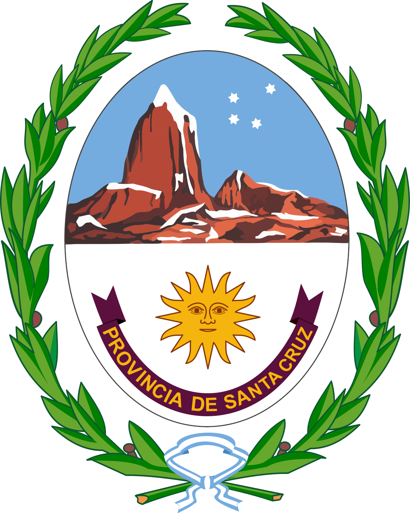

<header>
    <div class="logo">
        
    </div>
    <nav>
         <ul>
            <li><a routerLink="/turnos">Proyectos</a></li>
            <li><a href="expedientes.html">Expedientes</a></li>
            <li><a href="notas.html">Notas</a></li>
            <li><a href="autogestion.html">Autogestión</a></li>
        </ul>
    </nav>
    <div class="user-profile">
        
        <span>NOMBRE USUARIO</span>
        <a (click)="logout()">cerrar sesion</a>
    </div>
    <div class="notifications">
        <a href="notificaciones.html">
            <i class="fas fa-bell"></i>
            <span class="badge">3</span>
        </a>
    </div>
</header>
